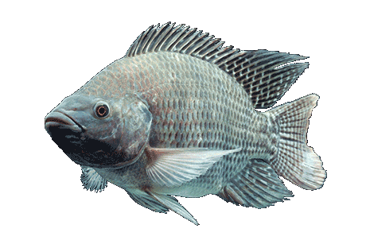
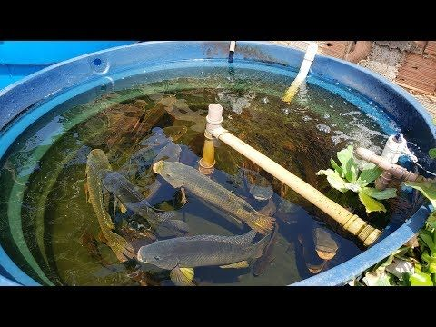
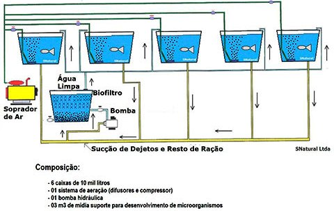
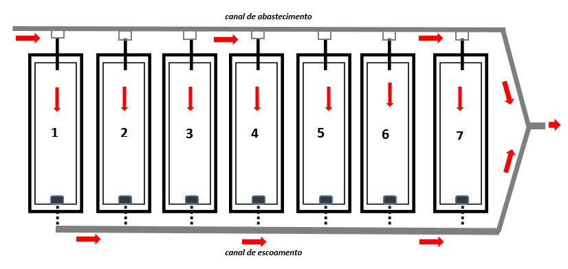

A tilápia é o peixe mais produzido no Brasil, representando cerca de 40% do pescado obtido no país. O sucesso pode ser explicado pela qualidade da carne, pela velocidade de engorda do peixe e pelo alto valor agregado, além de o mercado consumidor estar em expansão. Além disso, colabora o fato de a criação poder ser feita em pequenas áreas
Se comparada com outros tipos de carnes, como a de boi, de porco e de aves, pode-se concluir que a carne do pescado tem proteína de melhor qualidade. Isso se deve à presença importante de aminoácidos essenciais e também pelo fato da carne do pescado apresentar menor teor de tecido conectivo em sua constituição.
O tecido conectivo é uma estrutura que se torna gelatinosa durante o cozimento, e é composto por proteínas de baixa qualidade nutricional, e, por isso, a carne do pescado em geral é mais macia que as demais.
Com relação ao manejo alimentar, é recomendável que seja fornecida a quantidade de ração recomendada pelo fabricante e o técnico da criação, tendo um Guia de Alimentação, que orienta as quantidades de rações diárias e sua frequência, conforme as fases de cultivos, a temperatura e os demais parâmetros de qualidade de água.
Nas fases iniciais, os peixes devem receber 6,5% do peso vivo em ração. No estágio final, a relação é de 1,2%.
A ração extrusada é a mais indicada para a produção de tilápia, uma vez que o processamento em alta temperatura, pressão e umidade possibilita o maior aproveitamento dos nutrientes pelos peixes , pela melhora na digestibilidade da ração.
Na criação de tilápias, a taxa de mortalidade varia de 5% a 10%. Essa oscilação está relacionada a questões como manejo da criação, sanidade do plantel e sobretudo questões ligadas com a qualidade de água . No entanto, alguns cuidados básicos podem minimizá-la. São eles:
Devemos manter constantemente higienizadas as gaiolas (recomendado o uso de cal virgem) e preceder a separação dos animais por idade (animais jovens são mais suscetíveis as doenças) evitando assim a contaminação pela diferença de idade dos animais.
O primeiro passo para dar início à atividade é escolher bem a área onde vai instalar o criatório. De acordo com o zootecnista Emerson Assakawa, o local precisa oferecer água de boa qualidade e o viveiro deve ter boa profundidade, pois isso influencia os índices produtivos.
A Fazenda de Peixe proposta que pode ser manejada pelo dono sem emprego de mão de obra indicada abaixo, é formada de 5 tanques de 5 mil litros que em regime de produção fornecerão aproximadamente 300 kg de peixe por mês.
O melhor aproveitamento da área e a redução nos custos de implantação do projeto, com o adequado planejamento da construção dos viveiros, de modo a otimizar os cortes e aterros durante a movimentação de terra e o dimensionamento mais adequado e uma melhor locação das estruturas hidráulicas de abastecimento e escoamento, bem como das redes elétricas necessárias para o acoplamento de aeradores devem ser previstas.
